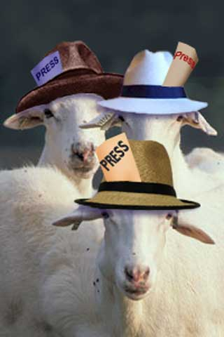

|

The Press and Freedom
Some disturbing trends.
- - - - - - - - - -
by Bob Edwards
Edwards was inducted on April 8 into the Kentucky Journalism Hall of Fame. That same day, he gave the annual Joe Creason Lecture at the University of Kentucky. This article is adapted from that address.
 OOD EVENING, and thank you for being here tonight. A pleasure to be embedded with you this evening. OOD EVENING, and thank you for being here tonight. A pleasure to be embedded with you this evening.
Kentucky journalism and broadcasting have changed drastically since I left here 33 years ago. Back then, you owned it. Your major newspapers, television and radio stations were owned and operated by Kentuckians. Today home ownership is pretty much confined to small-town weeklies, KET and the public radio stations. Your major daily newspapers are now provincial outposts for absentee corporate owners who expect profit margins of 20 to 30 percent. The managers of your TV stations report to bosses far away who care less about the stations' community service and journalistic exposes than they care about how those stations are contributing to the share price of corporate stock.
Your radio stations, which once took pride in covering local news, just don't do that anymore because they don't have to. As for your friendly local radio personalities, a few of them still are -- local, that is. A great many are not local, but they're pretending to be. It's called voice-tracking. A fellow sits in a studio in Birmingham and does the same show for dozens of stations, occasionally dropping in some weather and other tidbits about your town that he's plucked off the Internet. Half a dozen or more stations in a single town are owned by the same company. An individual or a corporation used to be limited to five stations nationally and no two in the same town. Today, a single company, Clear Channel, owns more than 1,250 stations across the country and is out buying more. One of the stations it owns is WHAS, the clear-channel, 50,000-watt boomer that I can hear in Washington when the atmospherics are right. I used to listen on my way to work at 1:30 in the morning, just to hear a little bit of home. But now the man doing the overnight program on WHAS is nowhere near Louisville, and he may never have stepped foot on Kentucky soil in his life. He's doing a program -- from somewhere -- for all the Clear Channel stations. So unless the Cards are playing late at night, there is no reason for me to ever again listen to WHAS.
It's kind of a cruel, ironic joke. The rise of cable TV and the Internet were supposed to democratize the media and give us many voices and numerous points of view. Instead, market forces and deregulation have clobbered diversity. The networks and cable channels have the same owners -- Hollywood studios, mainly -- and the most popular Web sites for news are those of news organizations firmly established before the Web was spun.
We are currently a nation at war and the free flow of information and ideas is never more important than it is at times like these. But monopolies choke that flow, allowing only the information and ideas that facilitate that other flow -- the flow of dollars into their pockets.
As exhibit A, I give you the Dixie Chicks, one of the hottest musical acts in the country -- or at least they were until one of the Chicks, in a bit of anti-war fervor, said they were ashamed that the President is from Texas. The backlash against the Chicks for making that remark is fine if it comes from ex-fans who say they won't buy any more records by the Dixie Chicks. The marketplace is a respectable forum for freedom of expression. The Chicks have a right to their opinions. Music fans have a right to tell the chicks to go to hell and to boycott their concerts and refuse to buy their records. Free speech is never really free -- it always costs something. But here's what's wrong with this picture. The backlash against the Chicks is spearheaded not by fans, but by Clear Channel Radio, owner of 1,250 radio stations. Clear Channel is based in Texas. Clear Channel loves George W. Bush. Clear Channel would like the administration of George W. Bush to remove all remaining restrictions on the ownership of media properties. That is exactly what the Bush administration is considering. The Federal Communi-cations Commission, chaired by Mike Powell, the son of Secretary of State Colin Powell, is reviewing the last remaining rules restricting media ownership. Before he became FCC chairman, Mike Powell was a communications lawyer, making fabulous sums of money lobbying on behalf of the broadcast industry -- the industry he's now supposed to be regulating. When he is finished regulating the broadcasting industry, Mike Powell will return to -- the broadcasting industry. Now how tenacious is Mike Powell going to be in regulating the broadcasting industry while he is on this temporary hiatus from the broadcasting industry?
But back to Clear Channel, which daily tells Bush and Powell that it loves them. Is Clear Channel's move on those Dixie Chicks an expression of patriotism or a business decision? Should Clear Channel have the right to ban the Chicks from its 1,250 stations? I think what individuals do is fine -- burn the CDs if you want. What industry does is another matter. Clear Channel can say the Dixie Chicks are tools of Saddam if it wants to, but it should not be allowed to kill the livelihood of any recording artist based on politics.
We've had ugly periods in our history having to do with blacklisting of people our politicians didn't like. I won't spend a lot of time telling you about what actors, directors, producers, journalists and others went through in the Red scares of the 1940s and '50s. Creative people went to prison, had their careers ruined, their marriages broken up, and, yes, there were suicides, all because politicians found communism, or rather the fear of communism, a fruitful political issue. Ladies and gentlemen, you do not want to return to that era. Witchburning is an ugly chapter in our history. It should not be revived, even if it's good for business.
Here's Exhibit B, taken from a story in The Washington Post of March 28. A Cleveland company called McVay Media describes itself as the largest radio consulting firm in the world. McVay developed a memo to its client stations advising them on how to use the war to their best business advantage. Called a "War Manual," the memo says the stations should "Get the following production pieces into the studio NOW . . . patriotic music that makes you cry, salute, get cold chills! Go for the emotion. . . . Air the National Anthem at a specified time each day as long as the U.S.A. is at war." The article also quotes Michael Harrison, publisher of Talkers,a journal for the radio talk business. Harrison says, "It's counterintuitive for hosts and program directors to pay too much attention to the antiwar movement right now."
Thirty-one years ago, I worked at WTOP, the all-news station in Washington. According to the Post article, WTOP's Web site featured links to the following websites: Thankthetroops.com ("Ways to Help Troops," "Sign Up to Thank Military," "National Military Family Association," "U.S. Central Command"), the home pages of the Army, Navy, Marines, Air Force, Coast Guard and the Department of Defense, the Stars and Stripes military newspaper, and email support to military. Another box read: "Support Our Troops. Send a greeting, a thank-you card or a donation." Balancing all that were links to two peace groups.
As for television, here's what the Post article had to say:
"The influential television news consulting firm Frank N. Magid Associates recently put it in even starker terms: Covering war protests may be harmful to a station's bottom line. In a survey released . . . on the eve of war, the firm found that war protests were the topic that tested lowest among 6,400 viewers across the nation. Magid says only 14 percent of respondents said TV news wasn't paying enough attention to anti-war demonstrations and peace activities; just 13 percent thought that in the event of war, the news should pay more attention to dissent."
Here again, the lack of diversity among broadcast owners is a factor in what information gets to the American public. Andrew Jay Schwartzman of the Media Access Project is quoted by the Post as saying, "with increasing concentration of ownership, if one or two big companies are using the same corporate-wide policy, or relying on the same consultants, there aren't effective competitive forces" to ensure alternative opinions.
Many Americans feel they're getting propaganda from the so-called embedded journalists in Iraq. Without question, the embedding program has been a PR bonanza for the military. And it's not just me saying that -- it's the military, which is wondering why it didn't think of this several wars ago. I was one of those complaining that the military wasn't providing access. Now they are, so I can't very well complain. I do, however, want to see the embedded reporters supplemented by independent reporters, who are unfortunately referred to by the military as "unilaterals." Also, editors and news directors have to make sure that the stories filed by embedded reporters are given some context -- and that readers, viewers and listeners are reminded that these stories from the front are little snapshots of a given unit at a particular place and time -- they are not The War.
What we're seeing on TV is the marriage of access with advanced technology. One morning I saw Secretary of Defense Rumsfeld answer questions at the Pentagon followed by Iraq's information minister delivering a live harangue from Baghdad. There were pictures of missile launches from American ships and pictures of Iraqi anti-aircraft fire moments later. Fires in oil fields. Iraqi troops surrendering, U.S. troops in a firefight and, of course, tank-cam. A live picture taken from a camera mounted on the lead tank of the invasion force as it raced north through the desert on its way to Baghdad. You just have to marvel at what technology has meant for war reporting and note how it contrasts with our images of Pearl Harbor, Midway and Normandy.
But remember what the news looked like in the days and weeks before the war began? Television news was consumed with the fate of Elizabeth Smart and other kidnapped girls. There was a lot about that woman who accidentally ran over her husband three or four times with the family car until his cheating butt was good and dead. And then there were all those interviews with the yutzes who are on those so-called "reality" TV shows. In other words, what passed for news was a lot of stuff that had no bearing on your life whatsoever. But it was titillating, and it might have kept you from reaching for the zapper and tuning in the ballgame -- which is the whole point of doing tabloid stories and celebrity gossip and calling it news.
It was the same before Sept. 11. We had spent an entire summer consumed with Gary Condit and Chandra Levy, a so-called story that mattered only to the Levy family and the voters in Condit's district in California. Then unimaginable tragedy hits New York City and Arlington, Va., and we all have to go back to journalism. Of course, it didn't last long. Thank God for Brittany and the Osbournes. Then we had Ben and J-Lo to relieve our distress over the break-up of Tom and Nicole.
This war will pass and journalism will return to the trivial, the sensational and that which we really need not know to get through a day. Did Robert Blake think there were blanks in that gun? Does Winona Ryder have a receipt for that outfit? A Father's Day frolic with Michael Jackson. Do trick-or-treaters ring the bell at Phil Spector's house?
No one can be blamed these days for not knowing what passes for a news program or who might be a legitimate journalist. The old rules have been tossed out the window. The definitions have no meaning anymore. There used to be lines no serious journalist ever crossed. Those lines are pretty blurry these days. Television hires political operatives and makes them anchors. CNN got one of its anchors from the cast of "NYPD Blue." If the "Larry King Show" is the program of choice for politicians, then aren't Larry and I in the same business? Young people don't know that there were once people who were strictly entertainers and others who were strictly reporters. I read a comment by a radio consultant who said young people believe Howard Stern does a public affairs program because he sometimes talks about stories in the news. It was nearly a career-ending moment for me when I read that. What's the use of getting up at 1 o'clock in the morning to do news for that generation? Maybe I should become Master-Flash Bob E and rap the news.
But I really do want to work for that generation. After all, they're the ones who are going to have to decide what to do about all of us boomers when we retire. I'm afraid they're going to conclude that there's just so many of us clogging up the golf courses that maybe euthanasia deserves another look.
I want them to be informed. They bring to mind a quote from Sydney Biddle Barrows. Do you remember Sydney? She was the Mayflower Madam, so-called because she was the product of several high society families and her hookers catered to a high class clientele. Or as Sydney put it, "I was in the wrong business, but I did it with dignity." Sydney had a lot of great quotes. She told her employees, "Never say anything on the phone that you wouldn't want your mother to hear at your trial." Sydney had this notion that the international bankers and other big spenders she cultivated wanted a young woman who would not just service them in the traditional way, but would also engage them in a conversation that would be up to their standards. . . .
 Next page | Press and President Next page | Press and President
1, 2
|